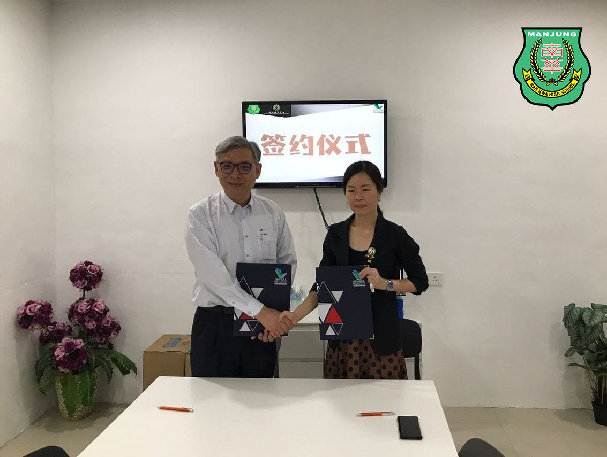
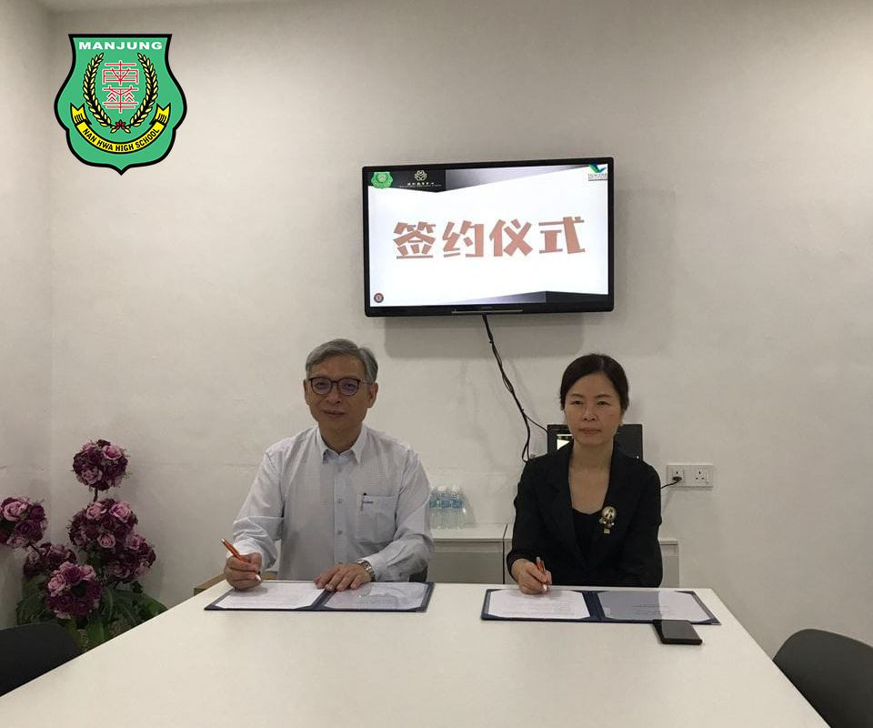
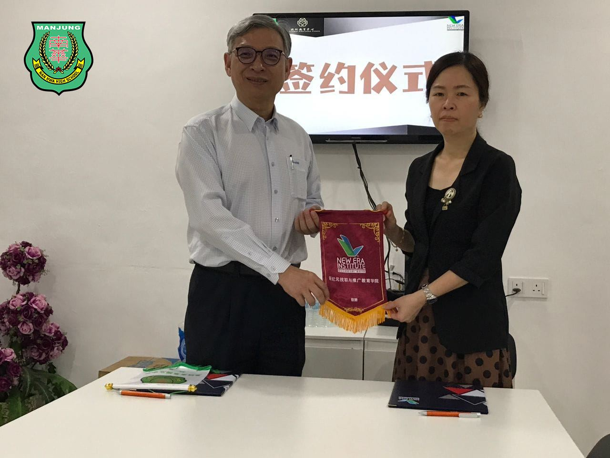
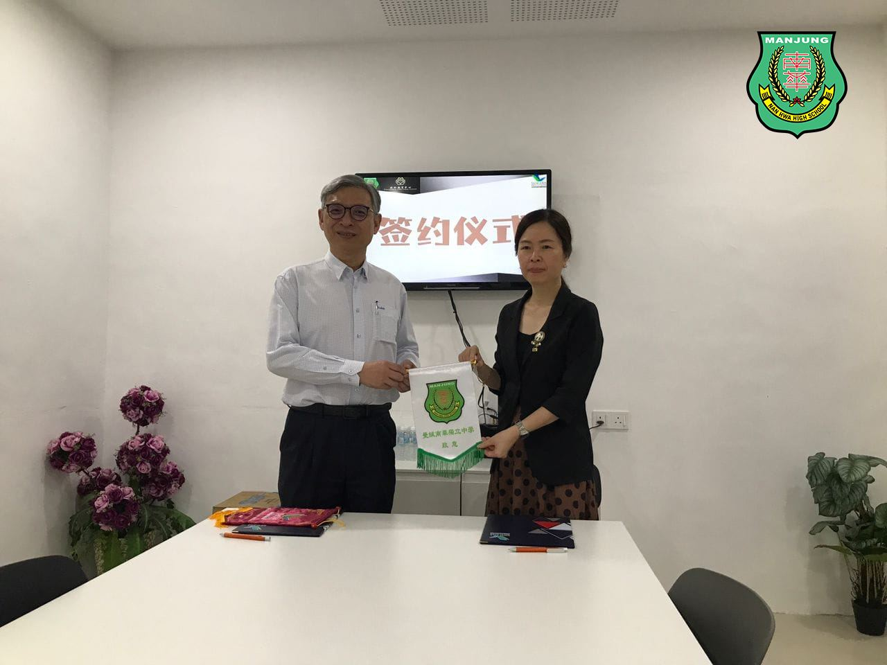
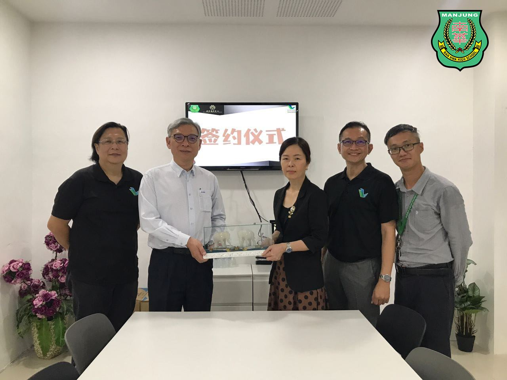
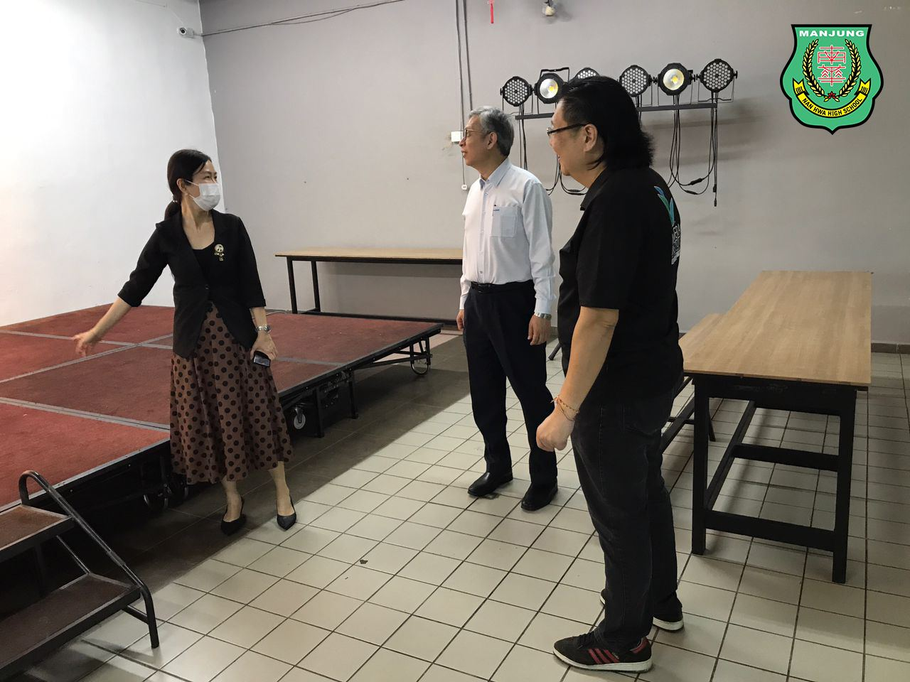
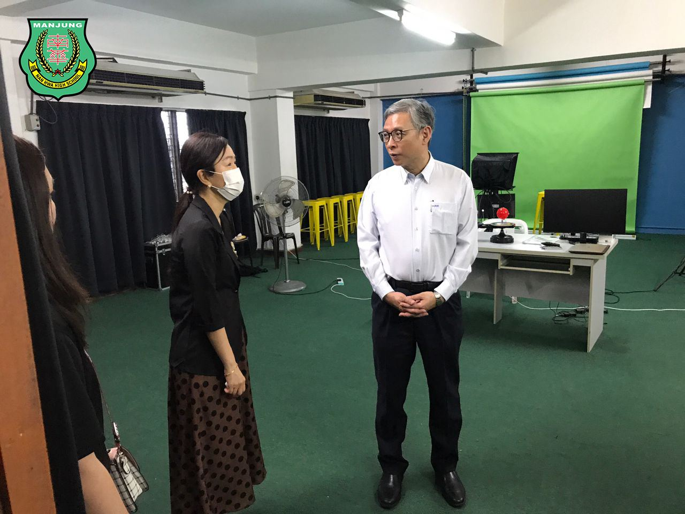
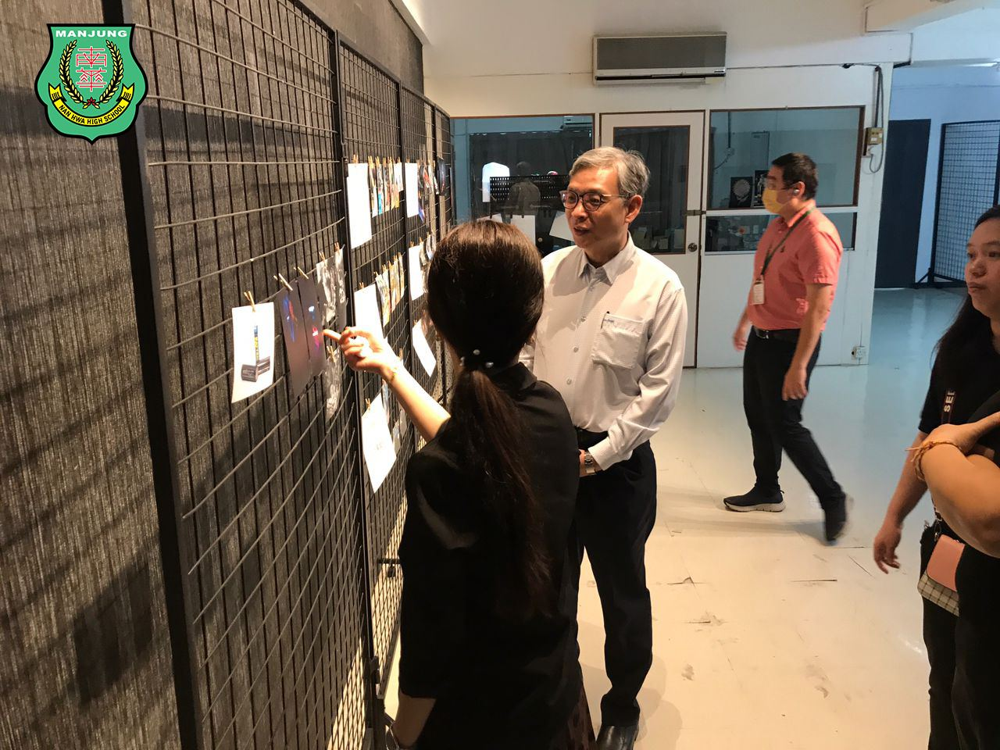

签署建教合作协议
签署建教合作协议
南华独中与新纪元技职学院共谋技职新未来
本校技职教育中心再次迈出了教育合作的重要一步。新纪元大学学院校长暨新纪元技职与推广教育学院执行长莫顺宗教授率领其团队，其中包括有副院长李应伦、创新科技发展系吴伟光主任以及精明产业与餐旅系欧慧欣主任莅临南华独中，双方共商并签署建教合作协议，旨在进一步加强两校之间的合作，共同推动技职教育事业的发展。
本次合作协议的重点是深化本校技职教育中心目前既有的高中选修课与技职课程范畴与课纲设计。南华独中将在未来向新纪元技职与推广教育学院借鉴和引进该院丰富多元的课程，从而创造更多的合作机会，为学生提供更广泛的技职教育选择。
新纪元技职与推广教育学院执行长莫顺宗教授表示，技职课程是未来的趋势，学生需要在多元领域获得全面的发展，这次合作将有助于拓宽学生的课程选择和提升他们的技能，为未来的职业生涯做好准备。莫顺宗教授期待与南华独中技职教育中心的合作，共同探索技职教育的新前景，为学生提供更多的可能性。”
本校校长陈丽冰博士表示，南华独中一直在积极发展多元的技职课程。她强调了合作的重要性，以及为学生提供更广泛教育选择的机会。陈校长坚信，通过与新纪元技职与推广教育学院的合作，将为孩子们开辟更高的格局与新的方向。”
科技与工艺总监万顺华老师表示，南华独中技职教育中心的发展是一项全社会的事业，背后有一群默默耕耘的老师和社区热心人士在添砖加瓦。他表示，他们对合作的前景充满信心，将努力打造成熟和完善的课程，以满足学生和社会的需求。
这一次的建教合作协议将不仅为两校学生提供更多的学习机会，还将促进技职教育的创新和发展，为学生未来的职业发展奠定坚实的基础。这一合作将不仅推动南华独中技职教育中心的发展，还将为整个技职教育领域注入新的活力和动力。新纪元技职与推广教育学院和南华独中技职教育中心的合作必将为学生的未来开辟更广阔的道路，为技职教育事业贡献更多的精彩篇章。
#新纪元 #技职与推广教育学院 #建教合作
#南华独中 #曼绒 #实兆远







